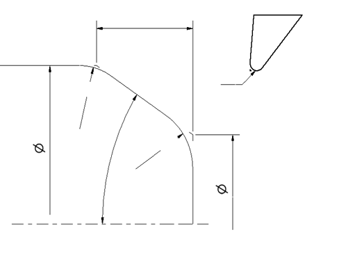

無補刀鼻-C&R角尺寸
第一圓&倒角
第一點差值
起始Y
X1:
Y0:
D1直徑
第二點差值
R1圓角
X2:
Y1:
A1角度
第三點差值
D2直徑
X3:
Y2:
R2圓角
第四點差值
刀鼻半徑
X0:
Y3:
正角車削外徑
無補刀鼻半徑
補刀鼻半徑
弦長
X偏值
Z偏值
輪廓偏移
X偏值
Z偏值
第一點:
X:
Z:
X:
Z:
第二點:
X:
Z:
X:
Z:
R:
第三點:
X:
Z:
X:
Z:
第四點:
X:
Z:
X:
Z:
R:
